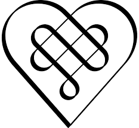

F&B Photography
Food ThatSpeaks.
Every dish has a story. We help brands tell it through images that make people want to order.
From first plate to final post, we handle the styling, the light, and the edit, so your food looks as good on a screen as it does on the pass.


Restaurants & Bars●
Brand Campaigns●
Social Content●
Packaging●
Hotel F&B●
Editorial●
Cookbooks
The Gallery
A feast for the eyes.
Selected Work
The brands we plate up.
The Brief
Rü and Kin-Rü share one roof and two personalities. Rü is the calm, craft-led restaurant. Kin-Rü is the bar next door, louder and later. The food and the drinks needed to feel like they belonged together without looking the same.
What We Did
A full menu shoot across both brands, plus a run of social-first reels for the bar. Warm, moody, and built to travel across a feed.
The Brief
Lunar café wanted a menu shoot that felt as easy and sunlit as the space itself. Bright, fresh, and unfussy.
What We Did
A daytime menu shoot leaning into natural light, clean surfaces, and the kind of frames that make you want a slow brunch.
The Brief
Conçu already had a strong identity and a tight grid to protect. Every new frame had to slot in beside the old ones without breaking the rhythm.
What We Did
Clean menu photography and a separate set for the festive hampers, styled so the packaging does the talking.
The Brief
Tai Tai is bold, graphic, and unafraid of colour. The food needed to match that energy.
What We Did
A punchy menu shoot with strong colour and high contrast, made for a brand that likes to be looked at.
In Good Company
Kitchens we have shot for.
